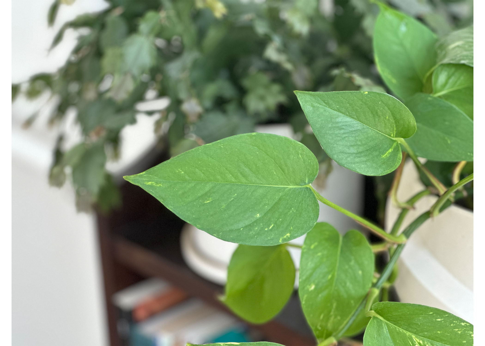
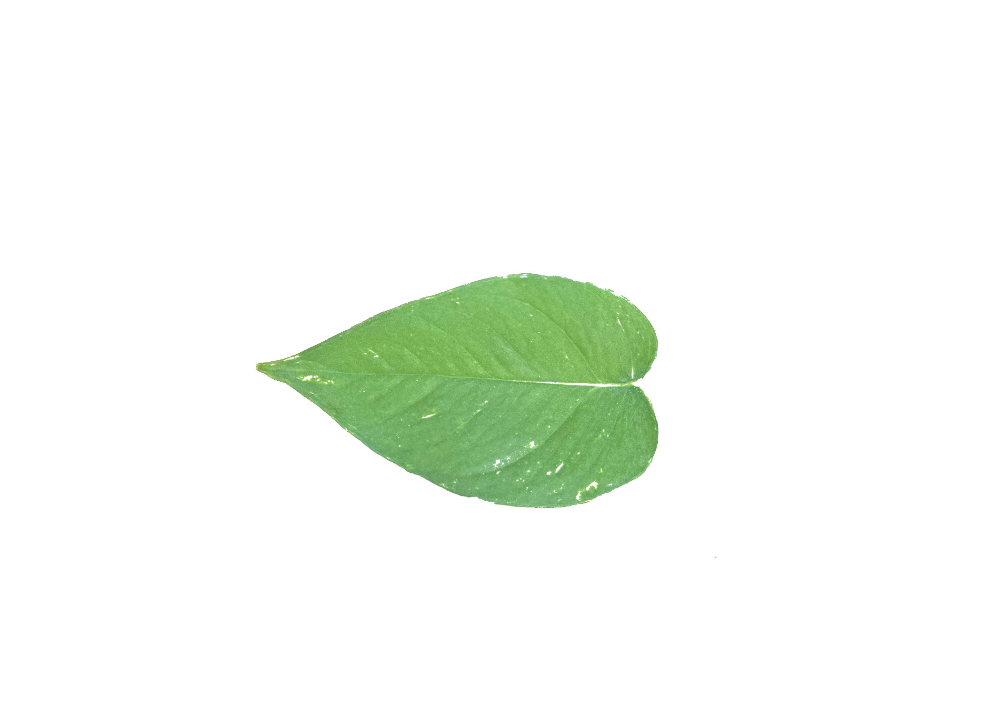
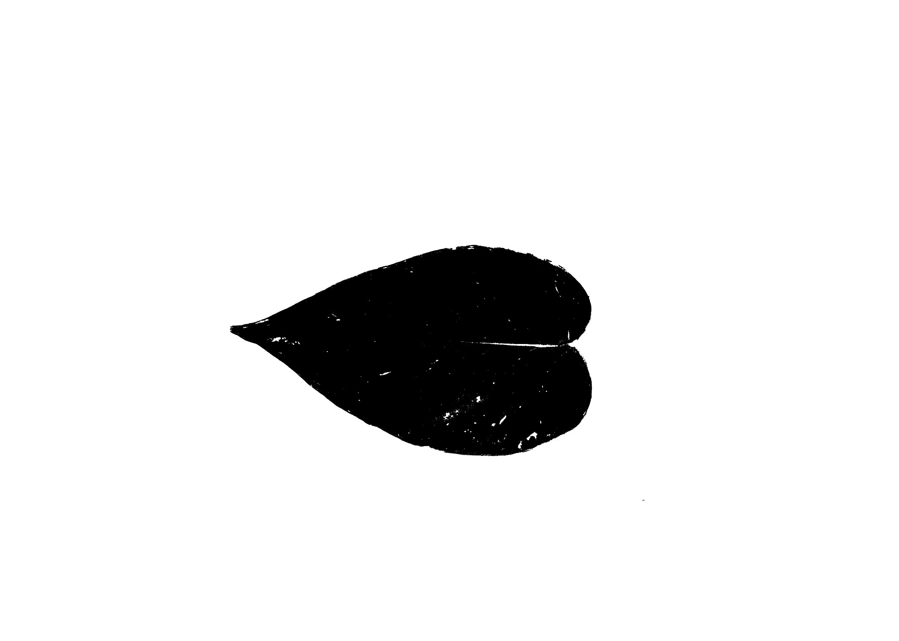
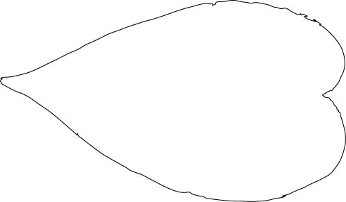
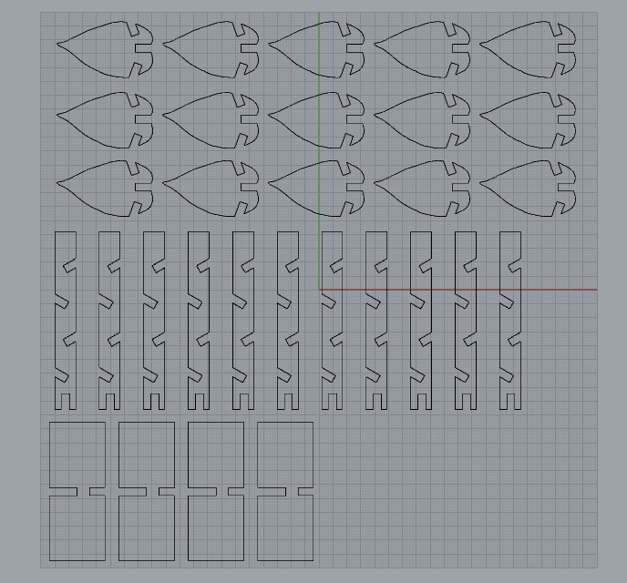

Steps
1
I started with a photo of one of my plants that I wanted to REANIMATE ... er recreate with cardboard.

2
Then I cut out the single leaf in Photoshop and used a threshold to get rid of irregularities due to
the color.


After that I converted the object to a vector in Illustrator and had a happy leaf to use in Rhino.

3
I pulled the leaf from Illustrator into Rhino and cleaned up the vectors by deleting some busy
points and using the rebuild function to remove a lot of the unnecessary points and to smooth curves out.
Then, I measured my cardboard to be 5.77mm thick, so I added some 5.77mm wide rectangles,
positioned them on the leaves, and started using splits and joins to make them into notches.
Finally, I added some basic base structure and "vine" pieces as well so that a full little plant
could be created. I used array linear to duplicate the outlines, and here we are! Ready to try out
once the machines are back online.

4
Unfortunately, the laser cutter was down during times where I could come into the MILL, so I will be
continuing my journey next week!
5
I will assemble! Once the laser cutting is done!